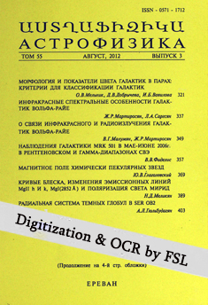

ԲՈՎԱՆԴԱԿՈՒԹՅՈՒՆ *** Table of Contents
| 2026, Vol. 69 | # 1 | 2025, Vol. 68 | # 1 | # 2 | # 3 | # 4 | |||
| 2023, Vol. 66 | # 1 | # 2 | # 3 | # 4 | 2024, Vol. 67 | # 1 | # 2 | # 3 | # 4 |
| 2021, Vol. 64 | # 1 | # 2 | # 3 | # 4 | 2022, Vol. 65 | # 1 | # 2 | # 3 | # 4 |
| 2019, Vol. 62 | # 1 | # 2 | # 3 | # 4 | 2020, Vol. 63 | # 1 | # 2 | # 3 | # 4 |
| 2017, Vol. 60 | # 1 | # 2 | # 3 | # 4 | 2018, Vol. 61 | # 1 | # 2 | # 3 | # 4 |
| 2015, Vol. 58 | # 1 | # 2 | # 3 | # 4 | 2016, Vol. 59 | # 1 | # 2 | # 3 | # 4 |